4. La vue et son modèle
Jusqu'ici, les actions fabriquaient elles-mêmes leur réponse : du texte, du JSON, quelques balises HTML écrites dans une chaîne de caractères. Dans une application MVC, c'est le rôle d'une vue : un fichier qui décrit la page HTML, avec des emplacements pour les données que lui transmet l'action, le modèle de la vue.
[Laravel] est livré avec son propre moteur de vues, [Blade]. Une vue [Blade] est un fichier dont le nom se termine par [.blade.php], rangé dans le dossier [resources/views] de l'application. C'est un fichier texte, ici du HTML, dans lequel trois sortes de balises sont interprétées sur le serveur :
- [{{ expression }}] : la valeur d'une expression [PHP], insérée dans la page ;
- [@instruction] : une directive : condition ([@if]), boucle ([@foreach]), héritage de gabarit ([@extends], [@section]), inclusion ([@include])... Une directive commence par [@], suivi de son nom ;
- [{{-- commentaire --}}] : un commentaire, qui n'apparaît pas dans la page produite.
Tout le reste est recopié tel quel. Les expressions sont écrites en [PHP] : il n'y a pas de second langage à apprendre. [Blade] ressemble ainsi à [Razor], le moteur de vues d'[ASP.NET Core MVC], qui mélange lui aussi HTML et code, et qui utilise lui aussi le caractère [@] ; il se distingue de [Thymeleaf] ([Spring MVC]), dont les vues sont des fichiers HTML valides enrichis d'attributs [th:]. Une vue [Blade] n'est pas exécutée telle quelle : à sa première utilisation, [Blade] la compile en un fichier [PHP] ordinaire, rangé dans [storage/framework/views], qu'il réutilise ensuite tant que la vue n'est pas modifiée. Nous verrons à quoi ressemble ce fichier.
4.1. Exemple 13 : une première vue
4.1.1. Le modèle de la vue : app/Models/PageModele.php
Le modèle de la vue est une simple classe immuable (cf. exemple 03) : les trois informations que la vue affichera. Rien n'oblige à décrire le modèle d'une vue par une classe : on pourrait passer trois variables séparées à la vue. Mais une classe documente ce que la vue attend, et permet à l'éditeur de vérifier le code de l'action. C'est la démarche que suivra l'étude de cas, où chaque vue a sa classe de modèle.
4.1.2. Le contrôleur : app/Http/Controllers/VuesController.php
- lignes 17-20 : l'action construit le modèle de la vue. La fonction [date] de [PHP] met en forme l'heure courante : [H] les heures, [i] les minutes, [s] les secondes ;
- ligne 21 : la fonction [view] fait fabriquer la page par [Blade]. Le premier paramètre est le nom de la vue : le chemin du fichier, relatif au dossier [resources/views], où les [/] sont remplacés par des points, et sans l'extension [.blade.php] : [vues.index] désigne le fichier [resources/views/vues/index.blade.php]. Le second paramètre est un tableau associatif, dont chaque clé devient une variable de la vue, ici une seule, [$modele]. [view] rend un objet [View], que [Laravel] transforme en réponse (de type [text/html]) en fabriquant la page ;
- ligne 29 : une autre vue, avec une autre variable ([$nom]). [response()->view(...)] fabrique une réponse à partir d'une vue, avec le code donné, ici 404 : une page d'erreur « maison ». Le type [View|Response] de l'action signifie : un [View] ou un [Response] ;
- lignes 31-35 : la même vue que l'action [index], avec un autre modèle. C'est l'intérêt de la séparation entre action et vue : une vue peut servir à plusieurs actions.
4.1.3. La vue : resources/views/vues/index.blade.php
- ligne 5 : un commentaire [Blade] ;
- ligne 6 : [{{ $modele->titre }}] insère la valeur de la propriété [titre] de la variable [$modele]. Entre les accolades, on écrit une expression [PHP] quelconque.
Tout ce qui est inséré par [{{ }}] est échappé : les caractères [<], [>], [&], ["] et ['] sont remplacés par leurs entités HTML. C'est le rôle que jouait la fonction [e] dans l'exemple 09, mais cette fois il est automatique : une vue ne peut donc pas, par inadvertance, insérer dans la page du HTML fourni par un utilisateur.
4.1.4. La vue : resources/views/vues/inconnu.blade.php
Une vue n'est pas obligée de recevoir un objet : la variable [$nom] est une chaîne.
4.1.5. Exécution


L'heure affichée est celle du temps universel (UTC), le fuseau horaire par défaut de [Laravel] ; l'étude de cas montrera comment le changer. La réponse brute montre le travail de [Blade] : les balises [{{ }}] ont été remplacées par leurs valeurs, le commentaire a disparu (il reste une ligne blanche à sa place).
La page d'erreur « maison », puis un nom contenant du HTML ([<b>martin], encodé dans l'URL) :
La balise [<b>] a été échappée, sans que l'action ni la vue aient rien eu à faire. Voici enfin la vue compilée par [Blade], telle qu'on la trouve dans le dossier [storage/framework/views] (sous un nom calculé, comme [bfadc851307fb914e48325630a6c9191.php]) :
Chaque [{{ expression }}] est devenu [<?php echo e(expression); ?>] : l'échappement est fait par la fonction [e] de l'exemple 09. Une vue [Blade] n'est donc qu'une façon plus agréable d'écrire un fichier [PHP] qui fabrique du HTML. [PHP] est d'ailleurs né comme un langage de pages, où le code s'insère dans le HTML entre [<?php] et [?>] ; [Blade] en garde l'efficacité et en corrige les défauts (l'échappement oublié, notamment).
4.2. Exemple 14 : le langage Blade
Cet exemple réunit dans une seule vue les principales constructions de [Blade].
4.2.1. Le modèle et l'action
Le modèle de la vue est décrit par trois classes immuables, chacune dans son fichier ([PHP] n'impose pas une classe par fichier, mais le chargeur de classes de [Composer], lui, cherche la classe [App\Models\Produit] dans le fichier [app/Models/Produit.php]) :
Le modèle contient des valeurs de types variés : chaînes, [null], booléen, tableau d'objets, tableau vide, objet contenant un autre objet. Les prix sont ici de type [float], pour simplifier les calculs de la vue (l'exemple 06 a montré pourquoi on leur préfère un décimal exact).
L'action construit le modèle avec des paramètres nommés (cf. exemple 01) : chaque valeur est précédée du nom du paramètre auquel elle est destinée, ce qui rend l'appel lisible malgré le nombre de paramètres.
4.2.2. La vue : resources/views/bases/index.blade.php
- lignes 9-12 : les directives [@php] et [@endphp] délimitent un bloc de code [PHP], exécuté à cet endroit de la page. On y crée deux variables de la vue : le total des prix, calculé par la méthode [sum] d'une collection (exemple 03), qui additionne une propriété de chaque élément, et le nombre de produits. Le bloc [@php] est à réserver à ce genre de préparatifs : le calcul appartient normalement à l'action ;
- ligne 17 : une valeur [null] s'affiche comme une chaîne vide. L'opérateur [??] de [PHP] (exemple 08) remplace une valeur [null] par une valeur par défaut ;
- lignes 19-20 : [{{ }}] échappe le HTML (2a) ; [{!! !!}] insère au contraire la valeur telle quelle, sans échappement (2b). [{!! !!}] est à réserver à du HTML produit par l'application elle-même, jamais à une saisie de l'utilisateur ;
- lignes 22-26 : une condition : [@if], [@elseif], [@else], [@endif], avec une condition [PHP] entre parenthèses. Chaque bloc est fermé par une directive [@end...] ;
- lignes 30-36 : une boucle [@foreach] ... [@endforeach], qui s'écrit comme la boucle [foreach] de [PHP]. À l'intérieur, la variable spéciale [$loop] décrit l'état de la boucle : [$loop->index] (le numéro de l'itération, à partir de 0), [$loop->iteration] (à partir de 1), [$loop->first], [$loop->last] (vrais à la première et à la dernière itération), [$loop->count] (le nombre d'éléments). Les variables extérieures à la boucle ([$modele->nom]) restent accessibles ;
- ligne 32 : l'opérateur ternaire de [PHP], [condition ? a : b] (exemple 11) ;
- ligne 40 : la directive [@forelse] ... [@empty] ... [@endforelse] est une boucle dont le bloc [@empty] est exécuté si la liste est vide. C'est plus simple qu'un [@if] qui testerait la longueur de la liste ;
- lignes 43-44 : des expressions calculées ([$total / $nombre]), et les variables du bloc [@php]. La fonction [number_format] de [PHP] met un nombre en forme : deux décimales, la virgule comme séparateur décimal, l'espace comme séparateur des milliers. Nous verrons à l'exemple 16 une façon bien meilleure de mettre en forme des nombres et des montants ;
- ligne 46 : l'opérateur [->] traverse les objets ([$modele->adresse->ville]), et l'on peut appeler n'importe quelle fonction [PHP] : [mb_strtoupper] met une chaîne en majuscules (les fonctions [mb_...], pour *multi-byte*, traitent correctement les caractères accentués codés en UTF-8) ;
- ligne 48 : le caractère [@] n'est interprété par [Blade] qu'au début d'un mot : dans une adresse électronique, il est recopié tel quel. Pour écrire un [@] suivi d'un nom de directive, on le double : [@@if] produit [@if]. De même, [@{{ ... }}] produit [{{ ... }}], ce qui est utile quand une page contient des accolades destinées à un framework [JavaScript].
Une remarque sur les commentaires : [Blade] traite les blocs [@php] avant les commentaires. Un commentaire qui contiendrait le mot [@php] serait donc pris pour le début d'un bloc de code, avec des effets surprenants : c'est pourquoi le commentaire de la ligne 8 ne le cite pas.
4.2.3. Exécution

La page produite :
Les commentaires et les directives ont disparu, mais ils laissent derrière eux leurs espaces et leurs sauts de ligne : [Blade] ne cherche pas à produire un HTML joliment présenté. C'est sans conséquence : le navigateur ignore ces blancs. Un nombre [float] inséré dans une chaîne est écrit avec un point décimal ([12.5]) ; [number_format] a écrit la virgule française.
4.3. Exemple 15 : gabarit, fragments, fichiers statiques
Les pages d'un site partagent le plus souvent une même structure : un entête, une barre de navigation, un pied de page, les mêmes feuilles de style. Plutôt que de répéter cette structure dans chaque vue, on l'écrit une fois, dans un gabarit (*layout*), que les pages étendent. Cet exemple utilise aussi [Bootstrap], le framework CSS le plus répandu, pour la présentation.
4.3.1. Les fichiers statiques
Une page HTML fait référence à d'autres fichiers : feuilles de style, scripts [JavaScript], images. Ces fichiers, que le serveur envoie tels quels, sont dits statiques. Avec [Laravel], ils sont rangés dans le dossier [public], que le serveur web publie tel quel (exemple 01) : le fichier [public/css/styles.css] est disponible à l'URL [/css/styles.css], sans que [Laravel] intervienne.
Quelques règles CSS en plus de [Bootstrap] : un fond gris clair, le style du pied de page, et celui d'une zone d'erreurs qui servira aux exemples suivants.
[Bootstrap], lui, est utilisé par les exemples 15 à 28. Plutôt que d'en mettre une copie dans le dossier [public] de chacun, les exemples le partagent : il est dans le dossier [exemples/commun/bootstrap]. Ce dossier n'est pas publié par le serveur web : une route, commune à tous ces exemples, sert ses fichiers. Elle est décrite par le fichier [exemples/commun/bootstrap.php] :
- ligne 7 : une route dont l'action est une fonction anonyme (exemple 01). Le paramètre de route [{fichier}] accepte n'importe quelle fin de chemin, barres obliques comprises (contrainte [.*], ligne 19, cf. exemple 02) : l'URL [/bootstrap/css/bootstrap.min.css] désigne le fichier [css/bootstrap.min.css] du dossier. La route est nommée [bootstrap] ;
- lignes 8-14 : servir des fichiers désignés par l'URL demande une précaution : une URL comme [/bootstrap/../../15-gabarit/.env] ne doit pas donner accès à un fichier situé hors du dossier. La fonction [realpath] de [PHP] calcule le chemin absolu d'un fichier, débarrassé de ses [.] et de ses [..], ou rend [false] si le fichier n'existe pas. On vérifie que le chemin obtenu commence bien par celui du dossier ([str_starts_with]), et qu'il désigne un fichier ([is_file]), sinon [abort_unless] arrête la requête par une erreur 404. [abort_unless(condition, code)] équivaut à [if (! condition) abort(code)] ; il existe de même [abort_if]. [DIRECTORY_SEPARATOR] est le séparateur des chemins du système : [\] sous [Windows], [/] ailleurs ;
- lignes 16-18 : [response()->file] fabrique une réponse qui envoie le contenu d'un fichier. Le type du contenu est choisi d'après l'extension du fichier ([pathinfo] la fournit), pour qu'une feuille de style soit bien annoncée comme [text/css] : un navigateur refuse une feuille de style annoncée comme autre chose.
La route est déclarée par le fichier [bootstrap/app.php] de chaque exemple :
- lignes 11-14 : le paramètre [then] de [withRouting] est une fonction, appelée après la déclaration des routes de [routes/web.php], pour déclarer d'autres routes. Celles-ci ne font pas partie du groupe [web] : elles n'ont ni session ni cookies, ce qui convient à des fichiers statiques. La fonction fléchée exécute le fichier [commun/bootstrap.php] ;
- lignes 18-24 : la méthode [booted] enregistre une fonction exécutée une fois l'application démarrée ;
- lignes 21-23 : la façade [View] enregistre un composeur de vue (*view composer*) : une fonction que [Laravel] exécute avant la fabrication de chaque vue dont le nom correspond au motif donné, ici [*] (toutes). Elle reçoit la vue, et peut lui ajouter des variables ([with]). Ici, [$chemin] (le chemin de l'URL demandée, fourni par [request()], la requête en cours) et [$annee] (l'année courante) sont ainsi disponibles dans toutes les vues, sans que les actions aient à les fournir. Le gabarit s'en sert pour son pied de page. La méthode [View::share('nom', valeur)] partagerait de même une valeur fixe avec toutes les vues.
4.3.2. Le gabarit : resources/views/layout.blade.php
- ligne 6 : la balise [viewport] demande aux navigateurs des téléphones d'afficher la page à la largeur de l'écran, ce qu'attend [Bootstrap] ;
- ligne 8 : la directive [@yield] marque un emplacement nommé, que les pages qui étendent le gabarit peuvent remplir, par une section de même nom. Le second paramètre est le contenu par défaut de l'emplacement, utilisé par une page qui ne fournit pas la section ;
- lignes 10-11 : [route('bootstrap', 'css/bootstrap.min.css')] fabrique l'URL de la route nommée [bootstrap] (exemple 04), avec la valeur de son paramètre [{fichier}]. La fonction [asset] fabrique l'URL d'un fichier du dossier [public]. Écrire l'URL à la main ([/css/styles.css]) fonctionnerait aussi, mais [asset] s'adapte si l'application est installée sous un préfixe d'URL ;
- ligne 16 : [@include] insère le contenu d'une autre vue, ici la barre de navigation. La vue incluse voit les variables de la vue qui l'inclut ;
- ligne 19 : l'emplacement que chaque page remplit avec son propre contenu ;
- ligne 22 : le pied de page utilise les deux variables du composeur de vue.
La classe [container] de [Bootstrap] centre le contenu et limite sa largeur ; [py-3] ajoute une marge verticale intérieure (*padding*) : [Bootstrap] fournit des centaines de classes de ce genre, qu'on combine dans l'attribut [class].
4.3.3. La barre de navigation : resources/views/fragments/navbar.blade.php
Un fragment : un morceau de page, qui n'a pas de sens seul. Les classes [navbar], [navbar-brand], [nav-link] sont celles de la barre de navigation de [Bootstrap].
4.3.4. Un composant : resources/views/components/carte.blade.php
- ligne 2 : un composant est un morceau de page qui a des paramètres : c'est la fonction de [Blade]. Un composant anonyme est une simple vue du dossier [resources/views/components] ; la directive [@props] déclare ses paramètres, qui deviennent des variables de la vue. On l'utilise comme une balise HTML dont le nom commence par [x-] : [<x-carte nom="..." fonction="..." />] insère le morceau de page produit avec ces valeurs. Les paramètres peuvent avoir une valeur par défaut : [@props(['nom', 'fonction' => ''])]. La carte ([card]) est un composant de [Bootstrap].
4.3.5. Les pages
- ligne 2 : la page étend le gabarit : [Blade] fabrique la page du gabarit, en remplaçant ses emplacements [@yield] par les sections que la page définit. Dans une vue qui étend un gabarit, le texte écrit en dehors des sections n'apparaît pas dans la page produite ;
- lignes 4-10 : la section [contenu], qui remplit l'emplacement de même nom. La page ne définit pas la section [titre] : l'emplacement garde son contenu par défaut, « Accueil » ;
- ligne 9 : l'utilisation du composant [carte]. Les paramètres sont écrits comme des attributs HTML ; leurs valeurs sont des chaînes.
- ligne 3 : une section courte, dont le contenu est donné en second paramètre ;
- lignes 8-13 : une carte par membre de l'équipe, dans une grille de [Bootstrap] ([row], [col-md-4] : trois colonnes sur un écran moyen ou large, une seule sur un écran étroit) ;
- ligne 11 : un paramètre dont le nom est précédé de [:] reçoit la valeur d'une expression [PHP], et non une chaîne : [:nom="$membre->nom"].
Le contrôleur ne présente pas de nouveauté :
La troisième page, enfin, n'utilise pas le gabarit :
4.3.6. Exécution
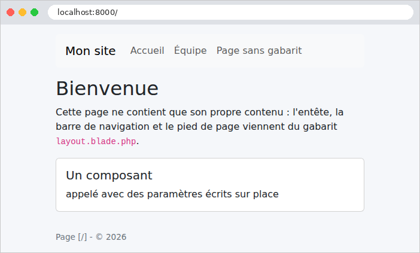

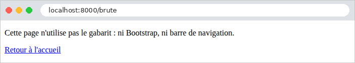
La page de l'équipe, telle que la reçoit le navigateur (les lignes blanches laissées par les commentaires et les directives ont été retirées) :
Le navigateur a reçu une page complète : l'assemblage du gabarit, du fragment, de la page et des composants a été fait sur le serveur. Les URL des feuilles de style ont été calculées par [route] et [asset] : ce sont des URL absolues. Le chemin de la page d'accueil est [/], celui des autres pages s'écrit sans barre initiale ([equipe]) : c'est la convention de [request()->path()]. On peut vérifier que les feuilles de style sont bien servies (l'option [-I] de [curl] n'affiche que les entêtes de la réponse) :
Le premier fichier a été envoyé par notre route ; le second, directement par le serveur de développement, sans passer par [Laravel].
4.4. Exemple 16 : les helpers
Une vue a souvent besoin de mettre en forme des valeurs : un montant avec sa devise, une date en toutes lettres, un texte en majuscules. Ce code n'a pas sa place dans l'action (qui ne s'occupe pas de présentation), et serait lourd à écrire dans la vue. On l'écrit en [PHP], dans des fonctions que les vues appellent : ce sont les helpers (aides) de la vue. [Blade] offre plusieurs façons de les rendre disponibles : appeler une fonction ou une méthode statique, écrire ses propres directives ([@monnaie($prix)]), et les composants, déjà rencontrés.
4.4.1. Les fonctions : app/Aides/Formats.php
- lignes 14-17 : une méthode statique ([static]) : on l'appelle sur la classe, sans objet ([Formats::majuscules('clavier')]). Elle accepte [null] ;
- lignes 22-24 : la mise en forme d'un montant. Elle dépend de la langue : en français, [1 149,90 €] (espace pour séparer les milliers, virgule décimale, symbole après le montant) ; en anglais, [€1,149.90]. La classe [Number] de [Laravel] s'appuie sur l'extension [intl] de [PHP], qui connaît les conventions de tous les pays (elle utilise les données du projet *CLDR* d'Unicode) : [Number::currency] met en forme un montant, la devise étant désignée par son code international ([EUR], [USD]). [intl] ne sait mettre en forme que des nombres [float] : on convertit le décimal ([toFloat()]), sans risque ici puisque le nombre n'est plus utilisé pour des calculs. La langue ([fr], [en]) est celle de l'application pour la requête en cours, rendue par [App::getLocale()] ; nous allons voir qui la fixe ;
- lignes 28-30 : la mise en forme d'une date [Carbon] (exemple 12). [locale(...)] rend une copie de la date réglée sur une langue ; [isoFormat] la met en forme : [dddd] le jour de la semaine en toutes lettres, [D] le jour du mois, [MMMM] le mois en toutes lettres, [YYYY] l'année. [Carbon] est livré avec les traductions de ces noms dans plus de deux cents langues. Le type [CarbonInterface] accepte toutes les dates [Carbon].
4.4.2. La langue de chaque requête : app/Http/Middleware/FixerLangue.php
La langue de mise en forme dépend de la requête : le paramètre [?lang=en] de l'URL choisit l'anglais, le français est la langue par défaut. Un middleware (exemple 03) la fixe avant chaque action, par [App::setLocale] : la façade [App] désigne l'application elle-même. La langue ainsi fixée ne vaut que pour la requête en cours : la suivante repartira de la langue de [.env] ([APP_LOCALE], l'anglais par défaut). Le chapitre sur l'internationalisation se servira de cette même langue pour traduire les textes.
4.4.3. La configuration : bootstrap/app.php
- ligne 19 : le middleware est ajouté à la fin du groupe [web] : il s'exécute pour toutes les routes de [routes/web.php], après les middlewares du groupe (session, cookies...). L'exemple 03 utilisait [append], qui ajoute un middleware global, exécuté pour toutes les requêtes, y compris celles des routes hors du groupe [web] ;
- lignes 25-28 : la façade [Blade] enregistre deux directives « maison » : [@monnaie(...)] et [@dateLongue(...)]. Une directive est traitée au moment de la compilation de la vue (exemple 13) : sa fonction reçoit le texte écrit entre les parenthèses (par exemple [$produit->prix, 'USD']), et rend le code [PHP] qui remplacera la directive dans la vue compilée. Ici, un appel à la méthode correspondante de [Formats], dont le résultat est échappé ([e]) et écrit ([echo]). Dans une chaîne entre guillemets, [\\] désigne un seul [\] ;
- les directives sont enregistrées dans une fonction [booted] (exemple 15), une fois l'application démarrée : la façade [Blade] n'est utilisable qu'à ce moment-là.
Parce qu'elles produisent du code compilé, les directives demandent une précaution : après la modification d'une directive, il faut effacer les vues compilées (commande [php artisan view:clear]), pour que les vues soient recompilées avec la nouvelle version.
4.4.4. Le contrôleur : app/Http/Controllers/PagesController.php
Les actions transmettent aux vues des valeurs brutes : une date ([CarbonImmutable::today()], la date du jour à minuit), des décimaux. La mise en forme est l'affaire des vues. La classe [Produit] réunit un nom, un prix (un [BigDecimal], cf. exemple 06) et un stock. Les routes sont nommées [accueil] et [produits].
4.4.5. Les vues
- ligne 5 : un composant qui fabrique un lien de la barre de navigation. Le lien de la page courante reçoit la classe [active] de [Bootstrap], qui le met en évidence ;
- ligne 6 : la directive [@class] fabrique l'attribut [class] d'une balise à partir d'un tableau : une classe écrite seule (['nav-link']) est toujours présente ; une classe écrite comme une clé (['active' => condition]) n'est présente que si la condition est vraie. La fonction [request()] rend la requête en cours ; sa méthode [is] compare le chemin de l'URL à un motif, où [*] remplace n'importe quelle suite de caractères. La variable [$slot] contient le contenu placé entre les balises ouvrante et fermante du composant ([<x-lien ...>Produits</x-lien>]).
- ligne 5 : la même chose, écrite directement dans la vue, sans composant, avec l'opérateur ternaire. [request()->is('/')] ne reconnaît que la page d'accueil. Le composant évite de répéter la condition pour chaque lien ;
- ligne 7 : l'utilisation du composant ;
- ligne 10 : un paramètre de [route] qui n'est pas un paramètre de la route est ajouté à l'URL, comme paramètre : [/produits?lang=en].
- ligne 3 : un badge de [Bootstrap], vert ([text-bg-success]) ou rouge ([text-bg-danger]) selon le stock, grâce à [@class]. Le texte du badge est choisi par l'opérateur ternaire ; ["$stock en stock"] est une chaîne interpolée.
- ligne 7 : l'appel de la directive « maison » ;
- ligne 9 : la fonction [app()] rend l'application, et [getLocale()] sa langue pour la requête en cours.
- ligne 3 : la directive [@use] importe une classe dans la vue, comme l'instruction [use] d'un fichier [PHP] ;
- ligne 14 : l'appel d'une méthode statique, qui fait office de fonction ;
- lignes 15-16 : la directive [@monnaie], avec sa devise par défaut, puis avec un paramètre ;
- ligne 18 : l'utilisation du composant [badge].
Le gabarit [layout.blade.php] est une version simplifiée de celui de l'exemple 15.
4.4.6. Exécution
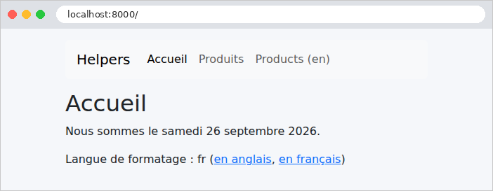
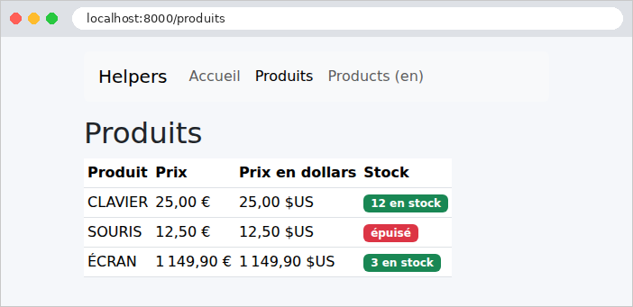
La même page, avec le paramètre [?lang=en]. Seule la mise en forme des nombres change : les textes, eux, sont écrits en dur dans les vues. Le chapitre sur l'internationalisation traduira aussi les textes.
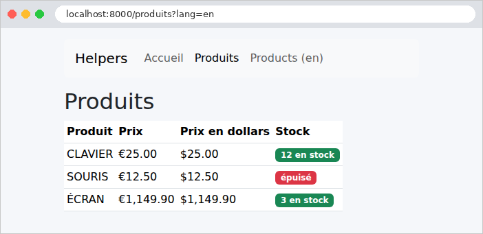
Un extrait du HTML produit :
4.5. Exemple 17 : un formulaire GET
Un formulaire HTML envoie ses champs au serveur, de l'une de deux façons, selon son attribut [method] :
- [method="get"] : les champs sont ajoutés à l'URL, comme paramètres ([/recherche?motCle=le&genre=roman]). C'est la méthode d'un formulaire qui consulte : une recherche, un filtre. L'URL des résultats peut être mise en favori, partagée, rechargée sans risque ;
- [method="post"] : les champs voyagent dans le corps de la requête (cf. exemple 11). C'est la méthode d'un formulaire qui modifie des données : une inscription, un ajout, une suppression.
Ce premier formulaire est une recherche de livres.
4.5.1. Le modèle : app/Models/Livre.php et RechercheModele.php
- lignes 14-17 : le modèle de la vue contient la saisie de l'utilisateur, pour que le formulaire la réaffiche, la liste des genres proposés, et les résultats.
4.5.2. Le contrôleur : app/Http/Controllers/LivresController.php
- ligne 14 : une constante de classe, privée, désignée par [self::GENRES] ([self] désigne la classe courante). Une constante ne peut pas contenir d'objets : les livres sont donc fournis par une méthode statique (lignes 17-25). Dans une vraie application, ils viendraient d'une base de données ;
- lignes 32-33 : les champs du formulaire sont lus comme des paramètres de l'URL (exemple 07). La méthode [string] rend le paramètre sous la forme d'un objet [Stringable] de [Laravel] (une chaîne enrichie de méthodes), vide si le paramètre est absent ; [value()] en extrait la chaîne [PHP] ;
- lignes 35-38 : le filtrage. La fonction [array_filter] garde les éléments d'un tableau pour lesquels la fonction donnée rend [true] : un livre est retenu si le mot-clé est vide ou figure dans son titre ou son auteur (en minuscules des deux côtés), et si le genre est vide ou est le sien. [array_filter] conserve les clés des éléments retenus (0, 2...) : [array_values] les renumérote à partir de 0 ;
- lignes 39-41 : le modèle de la vue.
La table de routage associe deux URL à la même action : à la première visite ([/]), il n'y a pas de paramètres, et tous les livres sont affichés.
4.5.3. La vue : resources/views/livres/recherche.blade.php
- ligne 6 : la balise [<form>]. L'attribut [action] est l'URL à laquelle le formulaire est envoyé ; [method="get"] place les champs dans l'URL. Les classes de [Bootstrap] disposent les champs sur une ligne ;
- ligne 8 : un libellé. Son attribut [for] désigne l'identifiant ([id]) du champ qu'il décrit : un clic sur le libellé place le curseur dans le champ, et les lecteurs d'écran lisent le libellé avec le champ ;
- ligne 10 : une zone de saisie. Son attribut [name] est le nom du paramètre envoyé au serveur : c'est le lien entre le formulaire et l'action ([$request->string('motCle')]). L'attribut [value] est la valeur affichée : la saisie précédente, réaffichée (et échappée par [{{ }}], ce qui est indispensable dans un attribut : une saisie contenant un guillemet ["] fermerait sinon l'attribut) ;
- lignes 14-20 : une liste déroulante. Chaque [<option>] a une valeur ([value]), envoyée au serveur, et un texte, affiché. La première option, de valeur vide, signifie « tous les genres » ;
- ligne 18 : l'option choisie à la requête précédente reçoit l'attribut [selected]. C'est un attribut booléen : sa présence suffit, il n'a pas de valeur. La directive [@selected(condition)] l'écrit si la condition est vraie, et n'écrit rien sinon. Il existe de même [@checked], [@disabled], [@readonly] et [@required] ;
- ligne 23 : le bouton d'envoi ;
- ligne 26 : le nombre de résultats.
4.5.4. Exécution

Saisissons [le] et choisissons le genre [roman] :
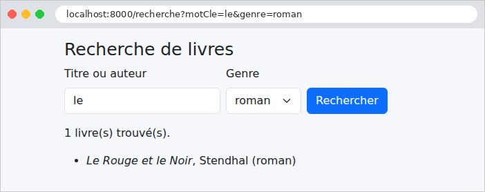
L'URL de la page des résultats contient les champs du formulaire : [/recherche?motCle=le&genre=roman]. La réponse, à partir du formulaire :
« Madame Bovary » n'est pas retenu : « le » ne figure ni dans son titre ni dans le nom de son auteur.
4.6. Exemple 18 : les champs d'un formulaire
Cet exemple présente tous les types de champs d'un formulaire HTML, envoyé cette fois par POST. Il montre comment réafficher chaque type de champ avec sa valeur courante, comment le navigateur envoie les valeurs de chacun, et comment le serveur vérifie qu'une valeur reçue fait bien partie des choix proposés. [Laravel] n'a pas de bibliothèque qui décrive les formulaires par des classes (comme [WTForms] en [Python]) : les champs sont écrits en HTML, dans la vue, et les directives de [Blade] ([@checked], [@selected]...) aident à les réafficher.
4.6.1. Le service des listes : app/Services/ListesService.php
Les listes de choix du formulaire (titres, pays, loisirs, langues) sont fournies par un service, sur le modèle de l'exemple 06 : dans une vraie application, elles viendraient d'une base de données. Chaque liste est un tableau associatif : la clé est la valeur envoyée au serveur, la valeur est le texte affiché. Le service est une classe concrète : le conteneur de [Laravel] sait la créer sans déclaration (exemple 06).
4.6.2. Le contrôleur : app/Http/Controllers/FormulaireController.php
- ligne 15 : le service est injecté par le constructeur ;
- lignes 20-23 : les valeurs initiales du formulaire, un tableau associatif : une valeur par champ (un tableau pour un champ à valeurs multiples). La vue reçoit ces valeurs, dans la variable [$saisie], et le service des listes ;
- lignes 31-39 : les champs reçus sont validés. Les champs à choix doivent recevoir l'une des valeurs proposées : un utilisateur malveillant peut envoyer n'importe quoi, pas seulement ce que proposait la page. [Rule::in(...)] fabrique la règle [in] (exemple 08) à partir d'un tableau de valeurs, ici les clés de la liste ([array_keys]). Les champs multiples sont vérifiés élément par élément ([loisirs.*], exemple 10). [date_format:Y-m-d] : un champ [<input type="date">] échange ses valeurs avec le serveur au format [aaaa-mm-jj], quel que soit le format dans lequel le navigateur l'affiche ;
- lignes 41-44 : pour l'exemple, la liste de ce que le navigateur a réellement envoyé. [(array) $valeur] convertit une valeur simple en tableau d'un élément (un tableau reste un tableau) ; [implode] réunit les éléments d'un tableau en une chaîne, séparés par le premier paramètre ;
- lignes 45-51 : le formulaire est réaffiché avec les valeurs reçues ([$saisie]), ce qu'a reçu le serveur, le résultat de la validation ([passes()], le contraire de [fails()]) et les erreurs.
La table de routage associe l'URL [/formulaire] à l'action [afficher] pour la méthode GET, et à l'action [traiter] pour la méthode POST.
4.6.3. La vue : resources/views/formulaire/formulaire.blade.php
- ligne 5 : un formulaire POST ;
- ligne 7 : la directive [@csrf] écrit un champ caché, nommé [_token], qui porte le jeton anti-CSRF. Une attaque CSRF (*Cross-Site Request Forgery*, falsification de requête inter-sites) consiste, pour un site malveillant, à faire envoyer par le navigateur de sa victime un formulaire vers notre application. Le navigateur y joint les cookies de notre application, et donc la session de l'utilisateur connecté : la requête semble légitime. La parade : chaque formulaire de notre application contient un jeton, aléatoire, lié à la session de l'utilisateur, que le site malveillant ne peut pas connaître. Le middleware [PreventRequestForgery] du groupe [web] (exemple 01) refuse toute requête POST (mais aussi PUT, PATCH, DELETE) dont le jeton est absent ou faux, avant même que l'action soit appelée : aucune action ne peut l'oublier. C'est lui que les exemples 02 et 11 écartaient pour leurs requêtes [curl] ;
- ligne 8 : notre propre champ caché ;
- lignes 13-19 : un groupe de boutons radio, un par titre. Tous ont le même attribut [name] : un seul est coché à la fois, et une seule valeur est envoyée. Chaque bouton a son identifiant ([titre-0], [titre-1]...), fabriqué avec [$loop->index], auquel son libellé fait référence. La directive [@checked] coche le bouton dont la valeur est celle du titre courant ;
- ligne 25 : la zone de saisie du nom ; [?? ''] traite le cas d'un nom absent du tableau ;
- ligne 30 : un mot de passe ne doit jamais faire l'aller-retour dans une page HTML : le champ n'a pas d'attribut [value], il est toujours vide à l'affichage ;
- lignes 41-47 : les cases à cocher, dessinées comme les boutons radio. Elles aussi ont le même nom ; mais plusieurs peuvent être cochées, et le navigateur envoie alors plusieurs valeurs : le nom [loisirs[]] demande à [PHP] de les ranger dans un tableau (exemple 10). La fonction [in_array] teste la présence d'une valeur dans un tableau ;
- lignes 53-57 : une liste déroulante, dont l'option courante est marquée par [@selected] ;
- ligne 62 : une liste à sélection multiple (attribut [multiple]), affichée sur quatre lignes ([size]), dont le nom se termine lui aussi par [[]] ;
- ligne 73 : une zone de texte, sur deux lignes. Sa valeur s'écrit entre ses balises, et non dans un attribut ;
- lignes 80-90 : la directive [@isset] teste l'existence d'une variable : [$recu] n'a été passée à la vue que par l'action POST. [$erreurs->messages()] rend, pour chaque champ erroné, la liste de ses messages d'erreur (exemple 09).
4.6.4. Exécution
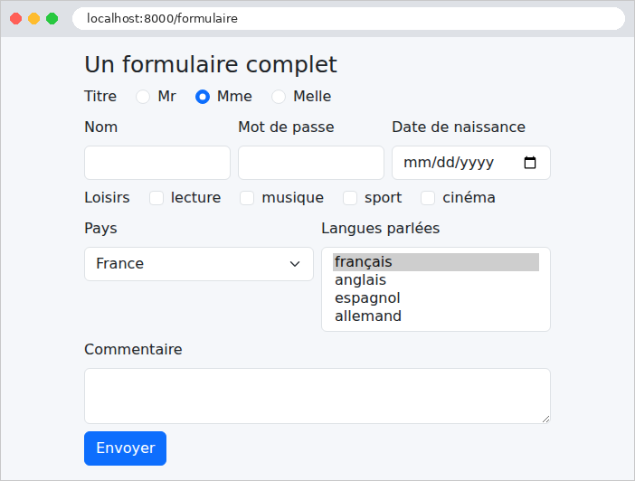
Les valeurs initiales sont visibles : le bouton radio « Mme », le pays « France », la langue « français ». Le HTML produit (extraits) :
Le jeton anti-CSRF est une chaîne aléatoire de 40 caractères, conservée dans la session de l'utilisateur (exemple 20). Remplissons le formulaire et envoyons-le :
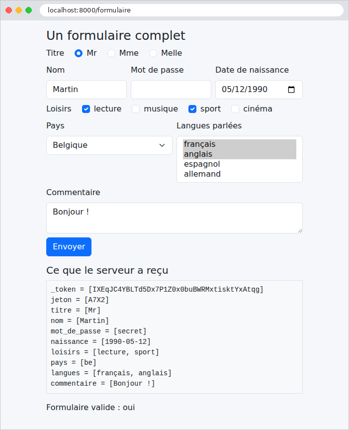
La page montre ce qu'a reçu le serveur : un paramètre par champ, avec plusieurs valeurs pour les cases à cocher et la liste multiple ; le mot de passe a été envoyé, mais n'est pas réaffiché dans son champ. Le champ caché [jeton] a été renvoyé tel quel : c'est le moyen de faire faire un aller-retour à une information que l'utilisateur ne voit pas (l'étude de cas s'en sert pour le numéro de version d'un enregistrement). Mais un champ caché n'est pas un champ protégé : l'utilisateur peut le modifier avec les outils de développement de son navigateur, et le serveur doit le vérifier comme tout autre champ. On remarque aussi que le jeton anti-CSRF ([_token]) fait partie des champs reçus.
Envoyons maintenant, avec [curl], un formulaire sans jeton :
La requête est refusée par le middleware [PreventRequestForgery], avec le code 419, propre à [Laravel] (*Page Expired*, la page a expiré : c'est le message que voit un utilisateur dont la session a expiré entre l'affichage du formulaire et son envoi). Pour passer, [curl] doit se comporter comme un navigateur : demander d'abord le formulaire, en conservant le cookie de session (option [-c], qui enregistre les cookies reçus dans un fichier), puis renvoyer le cookie (option [-b]) et le jeton lu dans la page :
(le jeton est celui de la page reçue par la première commande). Deux erreurs : le pays [xx] ne fait pas partie des choix ; aucun titre n'a été envoyé. Les messages sont en anglais : l'exemple suivant les francise.
4.7. Exemple 19 : la validation d'un formulaire
Un formulaire d'inscription, dont chaque champ a ses contraintes. En cas d'erreur, le formulaire est réaffiché avec la saisie de l'utilisateur et un message sous chaque champ erroné. Cet exemple utilise la démarche standard de [Laravel] : une requête de formulaire (exemple 08) valide les champs avant l'action ; en cas d'erreur, [Laravel] redirige vers la page du formulaire, en conservant la saisie et les erreurs pour la requête suivante.
4.7.1. Le formulaire : app/Http/Requests/InscriptionRequest.php
- lignes 12-23 : les règles de chaque champ (exemple 08). Les espaces qui entourent la saisie ont déjà été retirés par le middleware [TrimStrings] (exemple 08) : un nom fait d'espaces devient une chaîne vide, puis [null], et sera refusé par [required] ;
- ligne 18 : la règle [email] accepte des variantes, qui choisissent la vérification appliquée. Par défaut, elle suit la norme des adresses électroniques, qui accepte [martin@exemple] (un nom de machine sans domaine). [email:filter] utilise la fonction [filter_var] de [PHP] (exemple 07), qui exige un domaine complet ([exemple.fr]) ;
- ligne 19 : [integer] puis [between:18,120] ;
- ligne 22 : une règle qui porte sur deux champs : [same:mot_de_passe] compare la valeur du champ à celle d'un autre champ. [Laravel] propose aussi la règle [confirmed], qui, placée sur le champ [mot_de_passe], exigerait un champ nommé [mot_de_passe_confirmation] ;
- lignes 27-40 : la méthode [messages] fournit des messages propres à ce formulaire. Chaque clé désigne un champ et une règle ([nom.required]) ; une clé [required] seule vaudrait pour tous les champs. Ces messages l'emportent sur ceux des fichiers de langue (exemple 09).
Les messages que la classe ne fournit pas viennent, eux, du fichier [lang/fr/validation.php] (le fichier [.env] fixe la langue à [fr], cf. exemple 09) :
C'est le cas du message de la règle [integer], qui ne s'affiche que si l'on envoie autre chose qu'un nombre dans le champ de l'âge, ce qu'un navigateur ne fait pas (nous le verrons avec [curl]).
4.7.2. Le contrôleur : app/Http/Controllers/InscriptionController.php
- lignes 14-17 : l'affichage du formulaire. Le paramètre [?html5=true] active la validation par le navigateur (voir plus loin) ;
- lignes 22-25 : l'action ne reçoit que des formulaires valides : la requête de formulaire [InscriptionRequest] a été validée avant son appel (exemple 08). Elle affiche la page de bienvenue, avec les données validées. (L'exemple suivant montrera qu'il vaut mieux, après un POST réussi, rediriger.)
Et le formulaire invalide ? Il n'arrive pas jusqu'à l'action. La requête de formulaire lève une [ValidationException] (exemple 08), que [Laravel] traite ainsi, pour une requête venue d'un navigateur : il range dans la session de l'utilisateur les erreurs et les valeurs saisies (sauf les mots de passe), puis répond par une redirection vers la page précédente, celle du formulaire. Le navigateur redemande aussitôt cette page (par un GET), et la vue du formulaire y retrouve les erreurs et la saisie, que la session lui fournit une seule fois (nous verrons à l'exemple suivant ce mécanisme des données « flash »). Le formulaire est ainsi réaffiché par son action GET, et non par l'action POST : c'est déjà le schéma Post / Redirect / Get de l'exemple suivant, appliqué aux erreurs.
4.7.3. Un champ réutilisable : resources/views/components/champ.blade.php
Chaque champ s'affiche de la même façon : un libellé, la zone de saisie, et, en cas d'erreur, la zone encadrée de rouge et le message en dessous. Un composant évite de l'écrire cinq fois :
- ligne 5 : les paramètres du composant : le nom du champ, son libellé, et son type, [text] par défaut ;
- ligne 8 : la variable [$attributes] contient les attributs donnés au composant qui ne sont pas des paramètres déclarés par [@props] (ici [required], [min], [max]...) : écrite dans la balise, elle les recopie. Sa méthode [class] y ajoute l'attribut [class], à la façon de la directive [@class] (exemple 16) : la classe [is-invalid] de [Bootstrap] encadre la zone en rouge si le champ a une erreur. La variable [$errors] est disponible dans toutes les vues : c'est un « sac » de messages (exemple 09), celui des erreurs du formulaire précédent, rangées dans la session, ou un sac vide ; [has] teste la présence d'erreurs pour un champ ;
- ligne 10 : la fonction [old] rend la valeur saisie dans le formulaire précédent, conservée par la session, ou [null]. Un champ de type [password] n'a pas d'attribut [value] (exemple 18) ;
- lignes 13-15 : le bloc [@error] ... [@enderror] n'est affiché que si le champ a une erreur ; son premier message est alors dans la variable [$message]. L'élément [invalid-feedback] est affiché en rouge par [Bootstrap], sous une zone [is-invalid].
4.7.4. Les vues
- ligne 12 : l'attribut [novalidate] désactive la validation par le navigateur : le formulaire est envoyé tel quel, et seul le serveur le valide. C'est ce que nous voulons observer d'abord ;
- lignes 14-18 : un composant par champ. Les attributs HTML5 ([required], [maxlength], [min], [max], [minlength], [type="email"]) permettent au navigateur de vérifier la saisie avant même l'envoi (nous le verrons plus loin). [Laravel] ne les déduit pas des règles de validation : ils sont écrits dans la vue, et doivent rester cohérents avec les règles.
- lignes 16-18 : un message général, en bas de page, si le formulaire précédent contenait des erreurs ([any()] teste si le sac contient au moins un message), dans une zone dont le style est défini par [public/css/styles.css] (exemple 15). L'attribut [role="alert"] le signale aux lecteurs d'écran.
[$inscription] contient les données validées : le nom débarrassé de ses espaces, l'âge (une chaîne, cf. exemple 08).
4.7.5. Exécution
Envoyons un formulaire plein d'erreurs : un nom fait d'espaces, une adresse sans domaine complet, un âge de 12 ans, un mot de passe trop court, et une confirmation différente :

La saisie a été conservée (sauf les mots de passe), et chaque erreur est signalée sous son champ. L'URL est celle du formulaire, [/inscription] : la page a été affichée par l'action GET, après la redirection. Avec [curl], en fournissant le jeton anti-CSRF comme à l'exemple 18, on voit cette redirection :
On peut aussi envoyer ce qu'un navigateur n'enverrait pas, un âge non numérique. La page suivante ([curl -b cookies.txt http://localhost:8000/inscription]) montre le champ de l'âge, avec sa saisie et le message de la règle [integer], venu du fichier de langue :
On voit aussi les attributs HTML5 recopiés par [$attributes] : [required] (écrit [required="required"], une forme équivalente), [min], [max].
4.7.6. La validation par le navigateur
Supprimons l'attribut [novalidate], en suivant le lien « l'activer » (paramètre [?html5=true]). Le navigateur vérifie alors lui-même les attributs [required], [type="email"], [min], [maxlength]... avant d'envoyer le formulaire, et affiche ses propres messages, dans une bulle placée sous le premier champ erroné (« Veuillez renseigner ce champ », « La valeur doit être supérieure ou égale à 18 »...) : le formulaire n'est pas envoyé tant qu'il reste une erreur.
Cette validation est confortable pour l'utilisateur : immédiate, sans aller-retour avec le serveur. Mais elle ne remplace pas celle du serveur : un utilisateur peut la désactiver, et un programme comme [curl] l'ignore complètement. La règle est absolue : le serveur valide toujours, la validation par le navigateur n'est qu'un confort en plus.
Une saisie correcte, enfin. Le nom, saisi avec des espaces autour, a été nettoyé par le middleware [TrimStrings] :

4.8. Exemple 20 : le schéma Post / Redirect / Get
Quand une action POST répond par une page, cette page est le résultat d'un POST. Si l'utilisateur la recharge (touche [F5]), le navigateur renvoie le POST, après un avertissement que peu de gens lisent : la commande est passée deux fois, le message publié deux fois. Le schéma Post / Redirect / Get (PRG) évite ce problème : une action POST qui a réussi ne rend pas de page ; elle répond par une redirection (exemple 04) vers une page GET, que le navigateur demande aussitôt. Recharger cette page ne fait que refaire le GET.
Il reste un problème : la page GET voudrait afficher un message (« la tâche a été ajoutée »), mais c'est l'action POST qui le connaît, et elle ne peut pas transmettre de variable à une requête qui n'a pas encore eu lieu. La solution : le message flash, déposé dans la session par l'action POST, conservé jusqu'à la requête suivante, affiché, puis oublié. C'est le mécanisme que [Laravel] utilisait déjà, à l'exemple 19, pour les erreurs d'un formulaire.
4.8.1. Le service : app/Services/TachesService.php
La liste des tâches est partagée par tous les utilisateurs, et doit survivre d'une requête à la suivante. En [Java], en [C#] ou en [Python], on la garderait en mémoire, dans un service unique. En [PHP], c'est impossible : nous l'avons vu aux exemples 01 et 06, rien ne survit à la requête. La liste doit donc être rangée hors de [PHP] : dans une base de données, un fichier... ou dans le cache de [Laravel], que nous utilisons ici.
- ligne 18 : la façade [Cache] donne accès au cache de l'application : un magasin de couples clé → valeur. Le fichier [.env] des exemples le range dans des fichiers, sous le dossier [storage/framework/cache] ([CACHE_STORE=file], exemple 01) ; en production, on préfère un serveur spécialisé, comme [Redis]. [get] rend la valeur rangée sous une clé, ou la valeur par défaut donnée en second paramètre. Une valeur quelconque (ici un tableau de chaînes) peut être rangée : [Laravel] la sérialise, c'est-à-dire qu'il la transforme en texte, à l'aide de la fonction [serialize] de [PHP] ;
- lignes 27-32 : le serveur de développement, comme un serveur de production, peut traiter plusieurs requêtes en même temps, dans plusieurs processus (la variable d'environnement [PHP_CLI_SERVER_WORKERS] en fixe le nombre pour [php artisan serve]). Deux ajouts simultanés pourraient lire la même liste, y ajouter chacun sa tâche, et la réécrire : la seconde écriture effacerait la première tâche. Un verrou garantit qu'une seule requête à la fois exécute le code qu'il protège : [Cache::lock('taches-verrou', 10)] crée un verrou nommé, rangé lui aussi dans le cache, qui expire au bout de 10 secondes au plus (si la requête qui le détient s'arrêtait brutalement) ; [block(5, fonction)] attend 5 secondes au plus que le verrou soit libre, le prend, exécute la fonction, puis le rend. Le mot-clé [use] d'une fonction anonyme lui donne accès à une variable de la fonction qui la contient (ici [$libelle]) ; une fonction fléchée, elle, voit ces variables d'office ;
- ligne 31 : [forever] range une valeur sans limite de durée ; [put(clé, valeur, secondes)] la rangerait pour une durée donnée.
4.8.2. Le contrôleur : app/Http/Controllers/TachesController.php
- lignes 26-31 : la saisie est validée à la main, pour ne pas encombrer l'exemple. Une saisie invalide est réaffichée, sans redirection : il n'y a rien à protéger d'un double envoi, puisque rien n'a été modifié. [mb_strlen] compte les caractères d'une chaîne UTF-8 ;
- ligne 36 : la redirection vers la page GET, nommée [taches]. La méthode [with] d'une redirection dépose dans la session un message flash : une donnée conservée pour la requête suivante seulement ;
- lignes 40-43 : le contre-exemple : une page en réponse au POST. L'opérateur [?:] rend son opérande de gauche s'il est « vrai » (ici, une chaîne non vide), celui de droite sinon.
La table de routage :
4.8.3. Les vues
- lignes 13-15 : le bloc [@session('message')] ... [@endsession] n'est affiché que si la session contient une donnée [message], dont la valeur est alors dans la variable [$value]. La classe [alert alert-success] de [Bootstrap] affiche le message dans un cadre vert.
- ligne 15 : l'attribut [formaction] d'un bouton envoie le formulaire à une autre adresse que celle de son attribut [action] : un même formulaire peut ainsi déclencher deux actions différentes.
4.8.4. Où sont conservés les messages flash ?
Entre la requête POST et la requête GET qui suit, le message doit être conservé quelque part : dans la session de l'utilisateur. La session de [Laravel] est conservée sur le serveur : le fichier [.env] des exemples la range dans un fichier du dossier [storage/framework/sessions] ([SESSION_DRIVER=file]), un fichier par utilisateur. Le navigateur, lui, ne reçoit qu'un identifiant de session, dans le cookie [exemple20_session] (le nom est tiré de [APP_NAME]), qu'il renvoie à chaque requête. Observons-le avec [curl], en conservant les cookies dans un fichier (options [-c] et [-b], exemple 18), et en fournissant le jeton anti-CSRF :
La réponse au POST est une redirection (code 302, entête [Location]), accompagnée du cookie de session. Sa valeur est chiffrée avec la clé [APP_KEY] (c'est le rôle du middleware [EncryptCookies] du groupe [web]) : l'utilisateur ne peut ni la lire, ni la modifier. Déchiffrée, elle ne contient que l'identifiant de la session, 40 caractères aléatoires, qui sont aussi le nom du fichier de la session sur le serveur : [storage/framework/sessions/HNuWctWJ0HcPvmsAhFN5v3iCiw1SFFDMXv46F6og]. Voici ce fichier, après la requête POST (présenté sur plusieurs lignes) :
C'est un tableau [PHP] sérialisé : [a:4] annonce un tableau de 4 éléments, [s:6:"_token"] une chaîne de 6 octets... On y trouve le jeton anti-CSRF de la session, l'URL de la page précédente ([_previous], qu'utilise la redirection vers la page précédente de l'exemple 19), notre message, et la liste [_flash] des données flash. À la fin de chaque requête, les données flash déposées pendant la requête (liste [new]) passent dans la liste [old], et celles qui étaient déjà dans [old] sont supprimées : une donnée flash survit donc exactement à une requête. Suivons la redirection, en renvoyant le cookie :
Le message est affiché, et le fichier de la session, après cette requête, ne le contient plus :
Une nouvelle requête GET n'afficherait plus le message. La liste des tâches, elle, est dans un fichier du cache, dont le nom est calculé à partir de la clé ([storage/framework/cache/data/02/a1/02a1657007815300c992ef16d5ee9ce22f6ef096]) :
Les dix premiers chiffres sont la date d'expiration de la valeur (ici, jamais), le reste est la liste sérialisée.
4.8.5. Exécution
Ajout d'une tâche : le navigateur a suivi la redirection ; l'URL est celle de la page GET, que l'on peut recharger sans risque.

Une saisie invalide, réaffichée avec son message d'erreur :
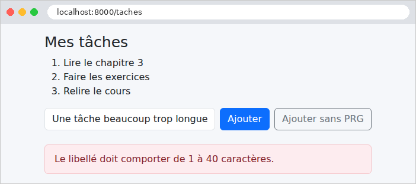
Le contre-exemple : la page est la réponse au POST, et son URL est [/taches/sans-prg]. Si l'on appuie sur [F5], le navigateur demande s'il faut renvoyer le formulaire ; si l'on accepte, la tâche est ajoutée une seconde fois.
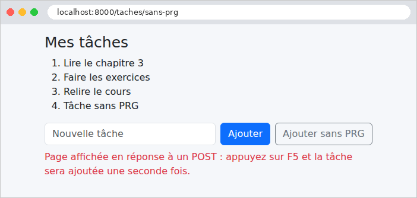
4.9. Exemple 21 : liens, boutons et confirmation
Un principe du protocole HTTP : une requête GET ne modifie rien. Les navigateurs, les moteurs de recherche, les outils qui préchargent les pages suivent librement les liens, sans demander l'avis de l'utilisateur. Un lien « supprimer » ([<a href="/contacts/2/supprimer">]) serait donc dangereux : un robot qui parcourt le site supprimerait tout. Dans une application web :
- consulter se fait par un lien ([<a href>]), qui émet une requête GET ;
- modifier (enregistrer, dupliquer, supprimer) se fait par un bouton placé dans un formulaire, protégé par un jeton anti-CSRF.
Cet exemple gère une liste de contacts, et ajoute une fenêtre de confirmation avant chaque suppression.
4.9.1. Le service : app/Services/ContactsService.php
Les contacts sont rangés dans le cache, comme les tâches de l'exemple 20. Chaque contact est un objet immuable [Contact] (un identifiant, un nom, un numéro de téléphone), rangé dans un tableau, avec le dernier identifiant attribué. Quelques points de [PHP] :
- lignes 29-37 : toutes les modifications suivent le même schéma : prendre le verrou, lire les données, les modifier, les réécrire, rendre le verrou. Cette méthode l'écrit une fois ; chaque modification lui passe une fonction (de type [callable], « appelable »), qui reçoit les données et les modifie. La fonction doit modifier le tableau lui-même, et non une copie : son paramètre est déclaré [array &$donnees], où le [&] demande un passage par référence (sans [&], un tableau est copié, cf. exemple 06) ;
- lignes 51-63 : un contact est immuable : on en fabrique un nouveau, qui remplace l'ancien dans le tableau. Une affectation est une expression, dont la valeur est la valeur affectée : [return $donnees['contacts'][$i] = new Contact(...)] remplace le contact et le rend ;
- ligne 68 : [++] placé avant une variable l'augmente de 1, et rend la nouvelle valeur ;
- ligne 80 : [array_splice] retire un élément du tableau, et renumérote les suivants ;
- les méthodes rendent [null] pour un contact inexistant : c'est au contrôleur de décider de la réponse.
4.9.2. Le contrôleur : app/Http/Controllers/ContactsController.php
- lignes 19-23 : une fonction utilitaire : un contact inexistant arrête l'action par une réponse 404 ([abort_if], cf. exemple 15) ;
- lignes 26-34 : les deux actions GET, qui ne modifient rien : la liste, et la fiche d'un contact ;
- lignes 37-42 : l'enregistrement de la fiche : une action POST, qui suit le schéma PRG. La même URL [/contacts/2] est traitée par deux actions différentes, selon la méthode : GET affiche, POST enregistre ;
- lignes 45-50 : la duplication : une autre action POST, déclenchée par un second bouton du même formulaire ;
- lignes 53-57 : la suppression, traitée par une requête DELETE.
La table de routage :
- ligne 12 : la suppression est déclarée pour la méthode HTTP DELETE, celle que le protocole HTTP prévoit pour supprimer une ressource. Or un formulaire HTML ne sait envoyer que des requêtes GET et POST. [Laravel] contourne cette limite : un formulaire POST qui contient un champ caché [_method], de valeur [DELETE] (ou [PUT], [PATCH]), est traité comme une requête de cette méthode. C'est la simulation de méthode (*method spoofing*), que la directive [@method] des vues met en œuvre.
4.9.3. Les vues
- ligne 13 : un lien, présenté comme un bouton par les classes de [Bootstrap] ([btn]...) : l'apparence n'a rien à voir avec la méthode HTTP. [route('contacts.fiche', $contact->id)] place l'id dans le chemin : [/contacts/2] (un seul paramètre peut être donné sans tableau) ;
- lignes 15-22 : un formulaire pour chaque bouton « Supprimer », sans autre champ que le jeton et la méthode. La classe [d-inline] l'affiche sur la même ligne que le lien. L'attribut [data-confirmation] porte le message de confirmation : les attributs [data-...] sont libres, destinés au [JavaScript] de la page ;
- ligne 18 : le jeton anti-CSRF (exemple 18), exigé pour toute requête qui n'est pas un GET ;
- ligne 20 : la directive [@method] écrit le champ caché [_method] : [<input type="hidden" name="_method" value="DELETE">].
- lignes 16-18 : deux boutons d'envoi pour un même formulaire : « Enregistrer » envoie le formulaire à l'adresse de son attribut [action], « Dupliquer » à celle de son attribut [formaction] (exemple 20). Ce formulaire n'utilise pas [@method] : le champ [_method] serait envoyé par les deux boutons, et la duplication deviendrait, elle aussi, une requête PUT ou DELETE ;
- ligne 19 : le retour à la liste : un lien.
4.9.4. La fenêtre de confirmation
Le navigateur sait afficher une boîte de confirmation (fonction [JavaScript] [confirm]), mais elle est peu esthétique, et son apparence dépend du navigateur. On utilise ici une fenêtre modale de [Bootstrap], affichée par quelques lignes de [JavaScript]. La fenêtre est un fragment, inclus dans le gabarit, et donc présent, caché, dans toutes les pages :
- ligne 2 : la classe [d-none] de [Bootstrap] cache l'élément ;
- lignes 3-4 : le fond grisé, puis la fenêtre, dessinés par les classes de [Bootstrap] ;
- ligne 11 : l'emplacement du message ;
- lignes 14-15 : les deux boutons, de type [button] (et non [submit] : ils n'envoient aucun formulaire), distingués par leur attribut [data-action].
- ligne 19 : la fenêtre, incluse dans toutes les pages ;
- ligne 21 : le script, placé en fin de page : quand il s'exécute, les éléments qu'il cherche existent déjà. Il est rangé dans le dossier [public/js].
Le script [public/js/app.js] :
- ligne 3 : le code est enfermé dans une fonction anonyme, exécutée aussitôt : ses variables ne se mélangent pas à celles des autres scripts de la page ;
- lignes 4-6 : la fenêtre, l'emplacement du message, et le formulaire en attente de confirmation ;
- lignes 9-14 : pour chaque formulaire qui porte un attribut [data-confirmation], on intercepte l'événement [submit], déclenché par son envoi. [preventDefault()] suspend l'envoi ; le formulaire est mis en attente, son message ([dataset.confirmation], la valeur de l'attribut [data-confirmation]) est placé dans la fenêtre, qui apparaît ;
- lignes 19-25 : un seul gestionnaire pour les clics dans la fenêtre : [evenement.target] est l'élément cliqué ; son attribut [data-action] dit de quel bouton il s'agit. « Oui » envoie le formulaire en attente, par la méthode [submit()], qui, contrairement au clic sur un bouton, ne déclenche pas l'événement [submit] (sinon, la fenêtre réapparaîtrait) ; « Non » cache la fenêtre.
Sans [JavaScript], le formulaire est simplement envoyé sans confirmation : la page reste utilisable. C'est l'amélioration progressive : le [JavaScript] ajoute un confort, mais l'application ne dépend pas de lui.
4.9.5. Exécution
La liste des contacts :
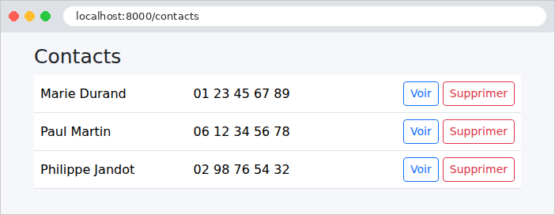
Un clic sur « Supprimer » affiche la fenêtre de confirmation :

Après confirmation, la requête DELETE (simulée), la redirection, et le message flash :
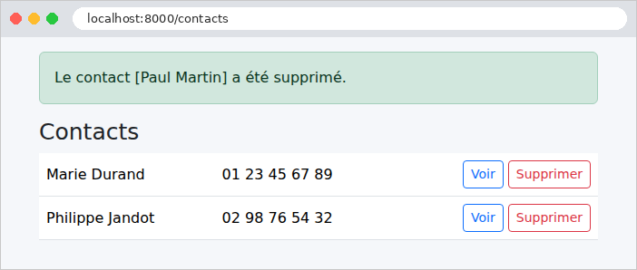
La fiche d'un contact, avec ses deux boutons d'envoi :
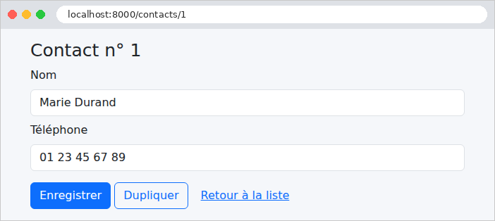
Une requête sans jeton anti-CSRF est refusée, et un contact inexistant donne une erreur 404 :
Les pages d'erreur sont encore celles, en anglais, de [Laravel]. Le chapitre sur le cycle de vie d'une requête montrera comment les remplacer par des pages « maison ».